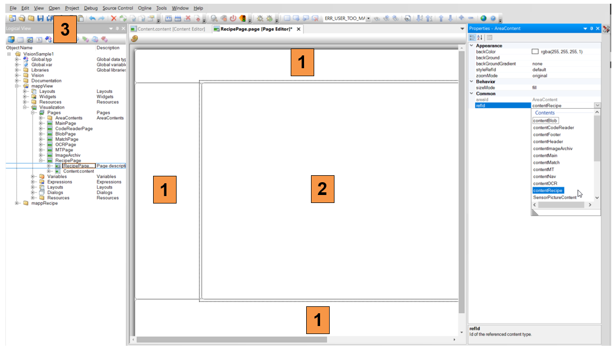

Import
This guide shows how to import the demo project into an existing project. The screenshots can look slightly different depending on the version used.
Copy source code
Open the demo project and the exiting project side by side. Go to the logical view in both projects.
- Copy the package “mappRecipe” from the demo project
- Paste the task into the existing project at the top
- Assign the new task to the CPU
- Make sure that the B&R libraries AsHttp, AsMem, FileIO, ArBrStr, ArBrWStr, AsIODiag, MpCom, MpBase and sys_lib are in the existing project, add the libraries if necessary.
Copy mappView pages
- Open the mappView tree in the demo project and navigate to RecipePage, right click and copy it
- In the existing project paste the page onto pages
- Assign the new task to the CPU
Assign pages
- Expand the new page and double click on RecipePage.page
- Select the default layout for the existing project from the properties window
Assign layout
- Once the default layout is set in the existing project, click on each section and make sure that the correct content is selected
- Select contentRecipe for the main section
- Save the project
|  |
Assign navigation
- If the existing project uses a navigation bar, add a new button that points to the new recipe page
- Assign the recipe page to the new navigation button
Configure OPC UA configuration
- Switch to the configuration view in the existing project and open the OPC UA configuration
- Select the global variable “Recipe_01” and “RecipeData”, If the variables does not show up, save and compile the project, then reopen the window
- Enable the variables with the green checkmark
- Set “Automatic Enable” to true in the properties window
Configure OPC UA configuration
- Select the variable Recipe_01.VIS
- Set “Show array elements” to true
Copy mappView binding files
- Expand the section mappView in the existing project and select all files ending with “binding” and “eventbinding”
- Right click and copy the files
- Paste the files in the existing project under mappView
Add binding files to vis
- In the existing project open the file “Visualizat.vis”
- Add the RecipePage in the “Pages” section
- Add the Recipe_binding in the “BindingsSets” section
- Add the Recipe_eventbinding in the “EventBindingsSets“ section
Add mappRecipe configuration
- Select the mappServices folder in the configuration view, if it does not exist, add the folder from the toolbox
- Select “MpRecipeCsv Default” from the toolbox
- Open the configuration and adjust the settings if needed
- Rename the MpLink to “gRecipeCsv_01” for CSV
Adjust PLC configuration
- Switch to the physical view and open the CPU configuration
- Make sure “Minimum user partition size” is larger than 0.
- Define a file device “RECIPE_DEVICE” and point it to the user partition “F:/” Define a file device “SIM_DEVICE” and point it to the user partition “C:/Temp” or “C:/” for simulation mode.
Adjust variable configuration
- To change the recipe data from the sample values to the “real” data open the RecVariables.var file in the mappRecipe package
- Edit the default values for the variable array REC_VAR_LIST.
- Replace the sample variables with the “real” data. For local variables add the task name followed by “:”